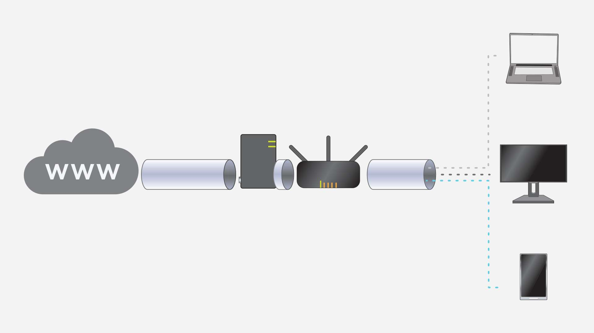
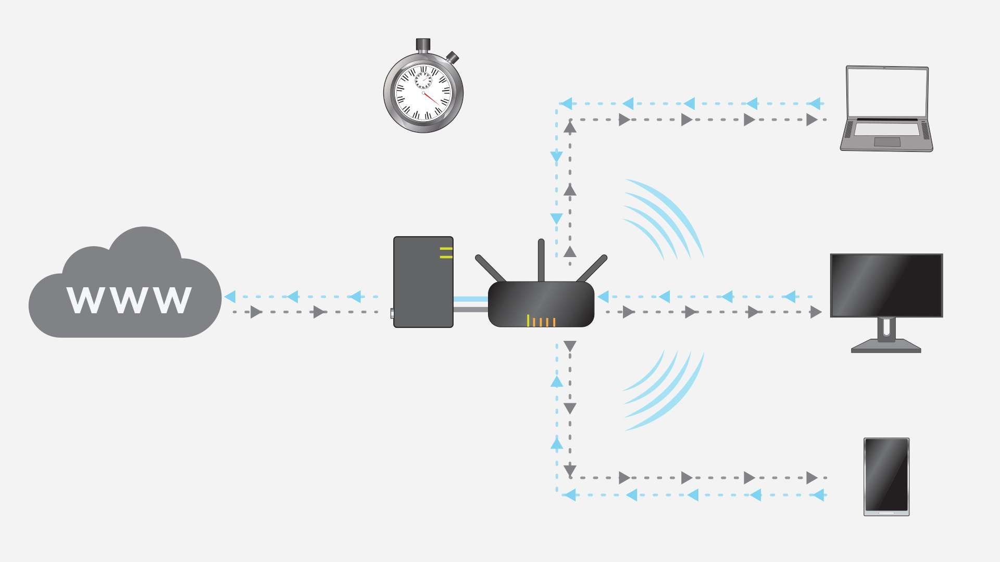
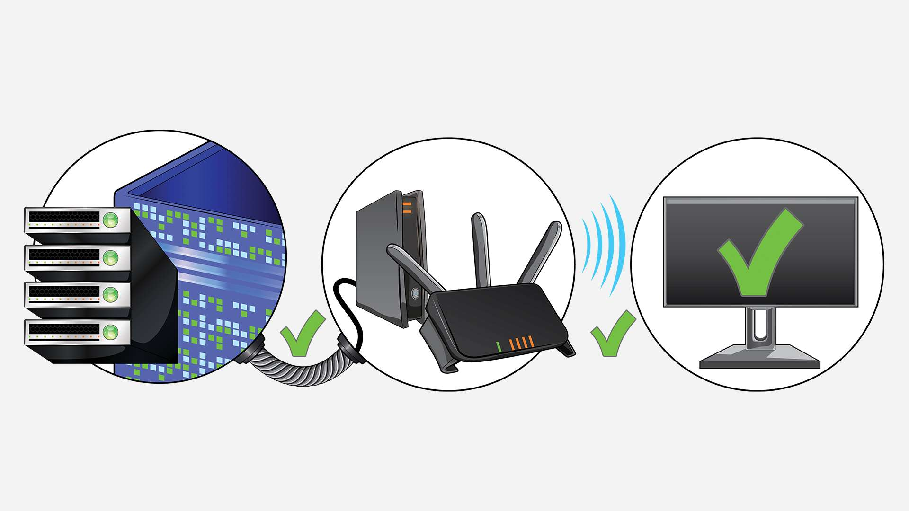

Highlights:
-
Your choice of network can have a substantial impact on your gaming experience.
-
Your ISP, modem, router, and PC all play an important role in the quality of your network.
-
Connection speed is important, but so is stability and low latency.
-
Wired and wireless connections are both excellent options, but there are many factors to consider when choosing.
This article covers the basics of networking, the differences between wired and wireless connections, and how your network of choice impacts gaming.
Having a high-quality internet connection is important when it comes to modern PC gaming.
As physical media becomes less common and digital distribution becomes more popular, access to the internet is critical to playing even single-player titles.
Modern cyberattacks continue to evade software-only security methods. Combating these threats requires a more comprehensive defense that secures devices at the application, software, firmware, and hardware levels.
Choosing the right type of internet connection for your gaming PC shouldn’t be an afterthought. To get the most out of your network, it’s important to understand the basics of how networking technologies work and how they can impact your gaming experience.
The Basics of Networking
To communicate with the internet, a device (such as your PC) needs to connect to a modem, often through a separate router. The modem converts the signal from your Internet Service Provider (ISP) and modifies it so it can be used in your home.
A router then communicates with the modem and creates the actual network to which your devices connect. The modem and router are often in a single device, usually provided by your ISP when you set up your service.
When this local network is in place, your PC can connect to the internet, and you can start gaming online.
The fundamentals are simple enough, but every step in that process is worth exploring in more depth.
Bandwidth & Network Speed
There are four primary links in the network chain, and all four should be considered when building out your network.
- ISP
- Modem
- Router
- Network Connection (wired or wireless)
Let’s start with the external gateway to the internet, the ISP.
Your ISP options might be limited depending on where you are, but most ISPs have a variety of tiers of service at different price points. It’s worth comparing the services available in your area to find the ISP with the best reputation, as well as the service that best aligns with your needs.
In order to find the right internet service, you’ll want to know the basics of what to look for. These are the metrics you should be considering when making that choice.
Bandwidth refers to the amount of data sent through your internet connection, and is measured as a number of megabits per second (for example, 100 Mbps.) This is the amount of data the connection allows, but it’s a different metric than the speed of that connection.
Speed is separated into two measurements; how quickly data can be downloaded and uploaded.
- Download speed is also measured in megabits per second (Mbps) or gigabits per second (Gbps) for significantly faster connections. Download speed refers to how quickly data is pulled from the internet to a device (think watching a movie from a streaming service).
- Upload speed is how quickly data can be pushed out from your device to the internet (think streaming gameplay from your PC to the internet) and is also measured in Mbps and Gbps.
To simplify, bandwidth is how much data can be transferred over your connection, while speed is how quickly that data can be transferred.
Many ISPs offer residential internet services via cable or DSL, and often these connections prioritize download speeds over upload speeds. Other connections such as fiber optic internet allow for symmetrical bandwidth, where download and upload speeds are equal.
All other factors aside, the higher the download and upload speeds you have access to, the better. You can check your internet speed by using tools like this one.
Latency, Ping, and Lag
While bandwidth and speed are important in day-to-day internet use, latency is arguably the most important networking factor when gaming.
- Latency refers to the amount of time it takes for data to make the round-trip from your PC, through your network and to its goal, and then back to your PC. Low latency is important when it comes to gaming, as quickly sending and receiving information to and from a game’s server will result in a better connection, and fewer issues such as lag. One of the simplest ways to reduce latency when gaming is to select the in-game server that’s closest to you, as the data will have less distance to travel.
- Ping is how latency is measured, usually in milliseconds (for example, 90.0 ms.) The lower the ping, the lower the latency. Lower ping is better; less than 100ms is ideal. You can measure your ping with services like this one.
- Lag is the result of high latency, and can be one of the most challenging issues when gaming online. If a player is sending or receiving information to a game server slower than another player in the same match, it can result in game-breaking connection issues such as input delay or connection errors. Lag can be a crippling hindrance in a fast-paced competitive game, and should be avoided whenever possible.
Choosing a Router
Choosing the right router can impact on your gaming experience, whether you choose a wired or wireless network.
Some examples of features you should consider are:
- Quality of service tools allow a router to prioritize specific traffic, such as traffic normally associated with gaming, over other types of traffic. This can help reduce latency if you’re gaming while others are also using your network.
- Wi-Fi 6 is the newest Wi-Fi standard, and has distinct advantages over previous versions of Wi-Fi. If you ‘re interested in the advantages of Wi-Fi 6, your router will need to support this technology. More on Wi-Fi in the “Wireless Connections” section below.
- Ethernet connections fast enough to supply your network with the speed it needs are important. If you have a Gigabit connection (1,000 Mbps) and you want to use an Ethernet cable to connect to your PC, you’ll want to make sure the Ethernet port on your router supports those speeds. More in the “Wired Connections” section below.
Be sure to research the capabilities of any router you are considering, and ensure it has the technologies you’re hoping to incorporate into your network. Not all routers are the same.
You also want to carefully consider how you want to connect your PC to your router, which is where the question of wired vs wireless becomes an important one.
Wired Vs. Wireless Connections
Most modern desktops and laptops allow for both options, but understanding the strengths of each can help you determine the right connection for your setup.
Wired Connections

Most routers have Ethernet ports, which allow you to transmit network data through an Ethernet cable to a supported device. This direct connection ideally provides a stable signal that can be transmitted from the router to the machine without requiring a wireless network.
While the simplicity of this configuration can be attractive, there are factors that should be considered when setting up a wired network in your home.
The location of your system. Ethernet cables can transmit large volumes of data over long distances, but you will have to deal with a physical cable. You may need to get creative with cable placement.
The right cable. Ethernet is a group of networking technologies that are ideal for creating local area networks (LAN.) These networks are designed to communicate via Ethernet cables, which use an RJ-45 connection.
Ethernet cables have their origin in the eighties, but they’ve seen significant advancements since then. The different versions of Ethernet cables are referred to as “Categories” with each iteration allowing for more data, and faster transmission.
Category 5 Ethernet cables (often shortened to Cat 5, or Cat 5e for the faster version) and Cat 6 cables are the most common consumer cables currently on the market. There are faster options as well, including Cat 6a, which is significantly faster than Cat 6, but also more expensive. Cat 7 and 8 are pushing the boundaries of what Ethernet is capable of, but these categories are mostly used for enterprise-level networks due to cost and practical concerns.
Here are the specifications of the most relevant:
| Category (Cat) | Highest Speed | Maximum Effective Length |
|---|---|---|
| Cat 5 | 10 (100Mbps) | 100 m / 328 ft. |
| Cat 5e | 1,000Mbps (1Gbps) | 100 m / 328 ft. |
| Cat 6 | 1,000Mbps (1Gbps) | 100 m / 328 ft. |
| Cat 6a | 10,000Mbps (10Gbps) | 100 m / 328 ft. |
When choosing an Ethernet cable, make sure that it is capable of transmitting speeds that are equal to or greater than the speed provided by your ISP. Cat 5e and Cat 6 have a top potential bandwidth of 1Gbps, which should be sufficient for the average home network, and provide a good balance of cost and performance. Cat 6a might also be an option to consider if the balance of higher speeds to higher cost works for your needs.
The right interface on your PC. Make sure your system is equipped to handle an Ethernet connection and that it’s capable of utilizing your network speeds. Most desktops incorporate an Ethernet controller in the motherboard I/O, but some laptops don’t make this connection available due to form-factor considerations. If this is the case, it’s possible to use a USB to RJ-45 adapter to still experience the benefits of a wired connection. This can result in lower connection speeds depending on the type of USB adapter you use however.
Many motherboard manufacturers include specialized Ethernet interfaces, such as the Killer E3100 2.5 Gbps Ethernet controller. These ports prioritize internet traffic frequently correlated with gaming, which can result in lower latency on crowded networks.
Ensure your router is capable of outputting the speeds you require as well. If your PC is ready for a 1Gbps signal but your router isn’t capable of providing it, you won’t see the benefits.
A wired connection is a simple, effective way to connect to a modem or router without needing to set up a wireless network. Just make sure you get the right type of cable, and that your router and PC are capable of making the most of your wired internet connection.
Wireless Connections

Most wireless internet connections are based on the IEEE 802.11 network standard, more commonly referred to as Wi-Fi. Wi-Fi allows your router to send data through a wireless network to a compatible device that is connected to the network.
Wi-Fi has become increasingly common over the last few decades as more devices, from smartphones to thermostats, connect to the internet. Wireless networks have the advantage of flexibility, as devices don’t need to be physically connected to the router to connect to the internet.
Wi-Fi, like Ethernet cables, has changed dramatically over the last few decades. Wi-Fi has also embraced a simpler naming convention, with the most recent being Wi-Fi 6. You can read more details about the Wi-Fi 6 standard here, but suffice it to say, Wi-Fi 6 provides the fastest wireless connection speeds currently available in a home network.
Almost all laptops have built-in wireless controllers, and most modern desktop motherboards do as well. As with Ethernet, there are wireless solutions often integrated in current generation motherboards, including features like Wi-Fi 6 support. If your system doesn’t support Wi-Fi, there is hardware available to add that functionality.
Wireless routers offer a wide array of Wi-Fi customization options, including features like guest networks, built-in security, and Quality of Service tools that can help reduce latency. As with Ethernet based networks, many of these options will depend on your router, so ensure you find one that incorporates the features you want.
Wi-Fi has come a long way, and is now comparable to Ethernet connections in terms of upload and download speeds, as well as latency. If you have the right ISP, a solid modem and a good router, Wi-Fi is a great option for gaming online.
How Networking Impacts Gaming
We’ve touched on how a network can impact the gaming experience, but let’s get more specific.
Bandwidth and Connection Speed
Playing games online uses a relatively small amount of data when compared to other activities like streaming video, but having a fast internet speed with a high bandwidth is always a plus, and will likely make your experience online all around better.
- Bandwidth is an important consideration if you have multiple people using one network. Too many devices using data at once can slow things down if bandwidth is limited.
- Download speed will impact the speed at which you can download games, as well as updates like patches and post-release content. As games continue to increase in size, this will only become more important.
- Upload speed will impact how quickly you can upload files, and can impact the quality of your stream if you choose to livestream gameplay.
Latency and Stability
Having low latency and low ping should be one of the most important priorities for a solid gaming network as it has a direct impact on your experience. This is especially true in games where accuracy and responsiveness are critical to success, such as fighting games or competitive first-person shooters.
How to Reduce Latency
Choosing the right server is an important part of reducing lag. A game’s server is what connects you to other players, and acts as an information hub that allows everyone to have a shared experience, whether cooperative or competitive.
One of the best ways to reduce latency is to consider distance when choosing a server to play on. Most online games allow you to select a server based on location; it’s recommended to choose the one closest to you. The further data has to travel, the longer the trip will take, and the higher the ping.
There are also steps you can take with your local network to help reduce latency, including disabling competing traffic. Disable other devices that are using your connection, and check background processes on your PC to ensure they aren’t using data as well.
The fewer devices utilizing your network while gaming, the more resources can be dedicated to your connection, and the lower your latency.
Router configuration can also impact latency. While the specifics of your networking hardware are likely unique, researching other player’s experience with your router might provide insight into software or router settings that can help reduce ping.
A Network Built for Gaming
Whether you choose to go with Wi-Fi or a wired connection, prioritize low latency and a stable connection alongside fast upload and download speeds.
Remember to consider every aspect of your network for the best experience:
- Find a good ISP that can provide a stable connection with sufficiently high bandwidth and transfer speeds, and a modem that supports those speeds.
- Choose a router that can create a network that supports the speed of your connection, and any additional technologies you want to use.
- Choose the wired or wireless connection from your PC to your router that supports how you plan to use your network. If it’s wired, choose the right Ethernet cable.
- Ensure your PC is properly equipped to handle the network you choose, either with a Wi-Fi card, or the right Ethernet controller. Look for the latest laptop and desktop CPUs to ensure your PC is equipped with the latest in networking technologies, such as Wi-Fi 6.
With all of these criteria met, you should have everything you need to enjoy a solid online gaming experience.